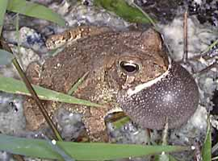

<body text="#000000" bgcolor="#FFFFFF" background="bg311.gif">

ЖАБА ЛОПАТОНОГАЯ (Bufo fowlery) В условиях опыта, когда температура окружающей среды была 20°, температура тела животного при 96—100% относительной влажности была меньше температуры окружающей среды на 0,74°, а при 7% относительной влажности — на 7,33. У этого же вида изучали реакцию на свет в связи с различной температурой окружающей среды. При температуре 20—25° примерно 80% жаб двигались к свету, причем реакция эта наступала в течение 2 минут. При более высоких и более низких температурах их движения становятся медленными и менее целеустремленными, а реакция на свет замедляется. 